🥣
抵达后
老厨家 · 南岗松雷店
从酒店出发约 2 km，先用一顿东北菜开启旅程。
东北菜距酒店 2 km
向北追一场森林与界江的秋天
从酒店出发约 2 km，先用一顿东北菜开启旅程。
秋林公司 → 颐园街 1 号欧式建筑 → 积别洛索高大楼旧址 → 梅耶洛维奇大楼 → 黄房子俄罗斯小院街区
把夜景留给教堂广场，再沿中央大街散步。
经鹤哈高速前往伊春方向，长途日注意轮换休息。
哈尔滨 → 乌伊岭松江源湿地景区
当天核心景观，预留日落前的完整观景时间。
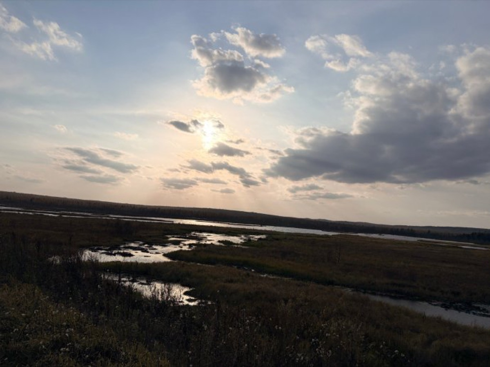
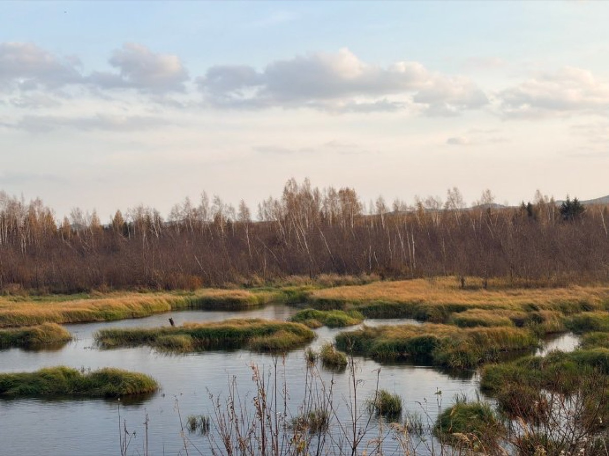
左右滑动查看 2 张游客实拍
出门早餐后前往汤旺河林海奇石，尽量避开客流。
检票后走最左侧通道，乘景交车后从木栈道开始。
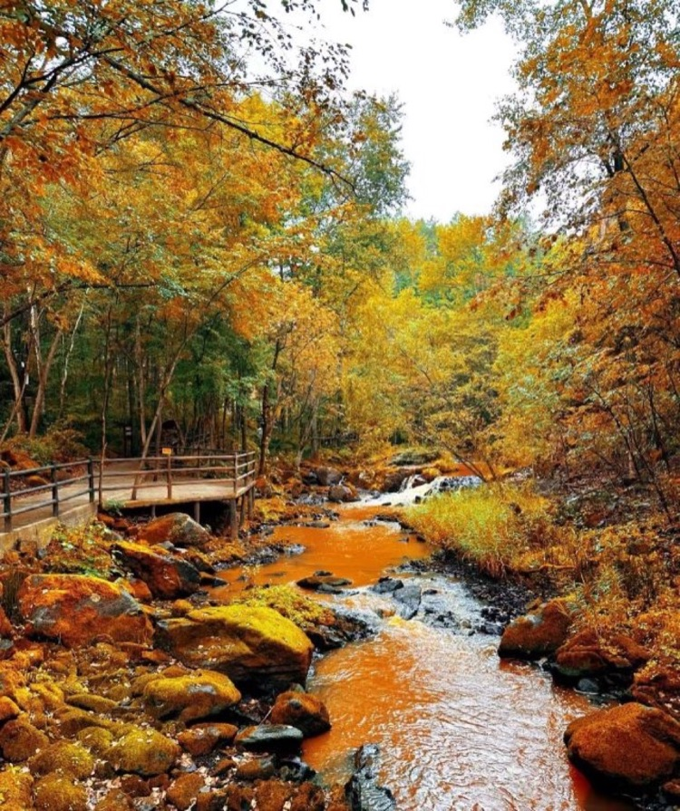
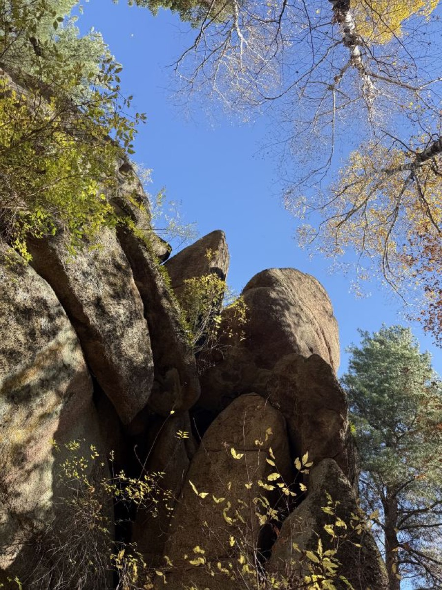
左右滑动查看 2 张游客实拍
汤旺 → 嘉荫，为界江日落预留机动时间。
面对口岸正门向右驶入小村道，沿村道开到尽头。
早餐与本地补给后启程。
上午进入湿地，把光线较好的时段留给自然景观。
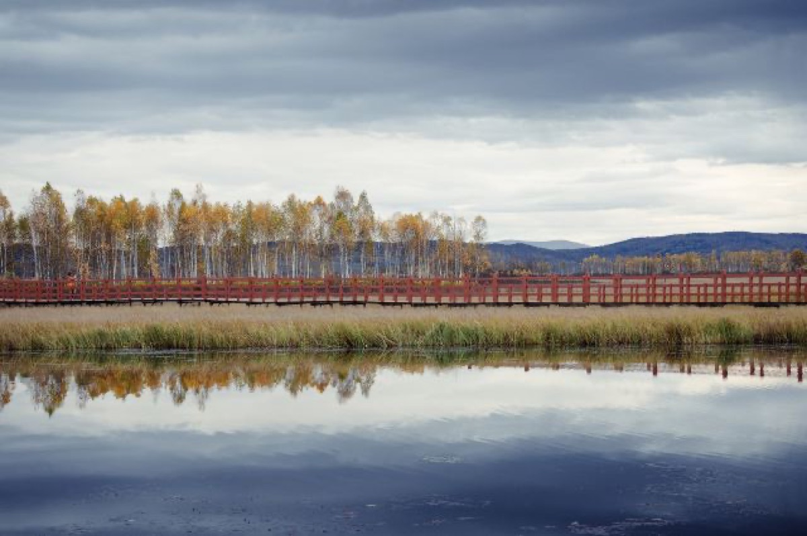
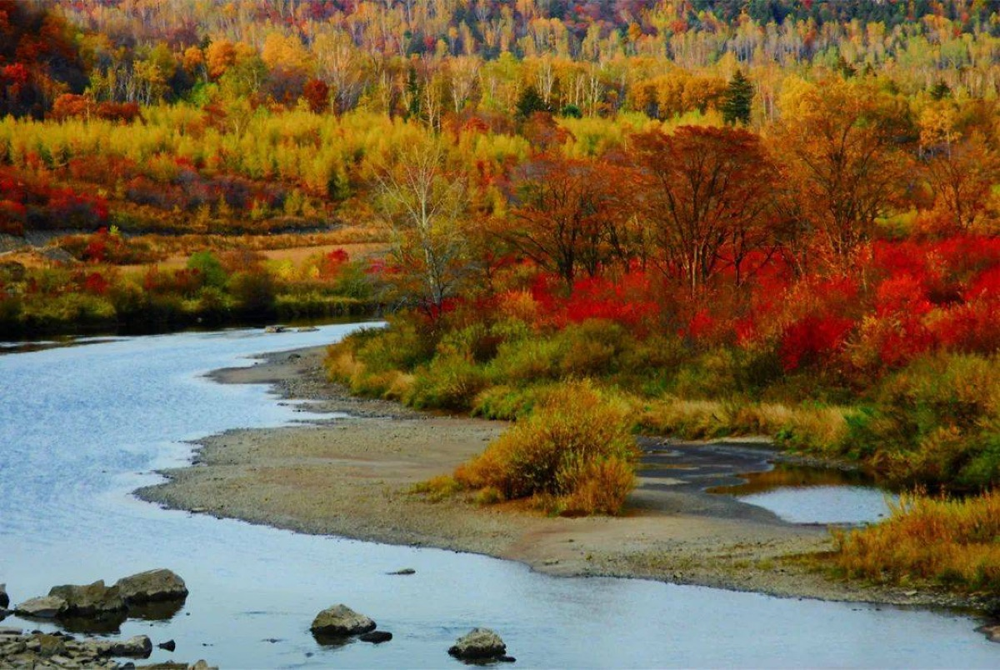
左右滑动查看 2 张秋季实拍
本次在门口拍照，不安排入园。
牧场停留后，再前往秋枫路。
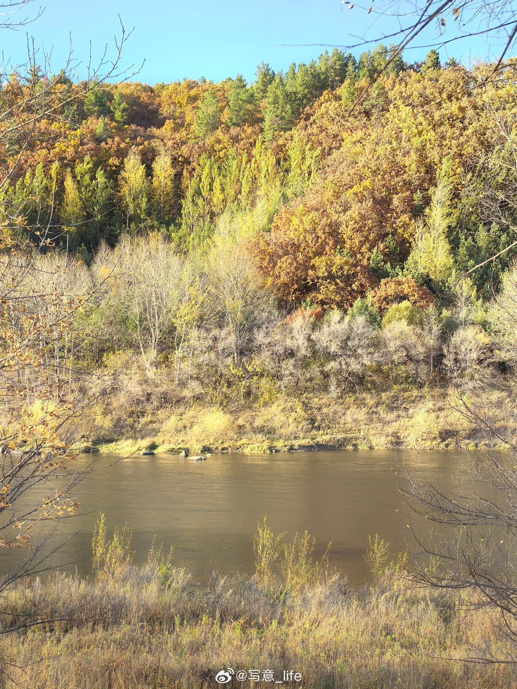
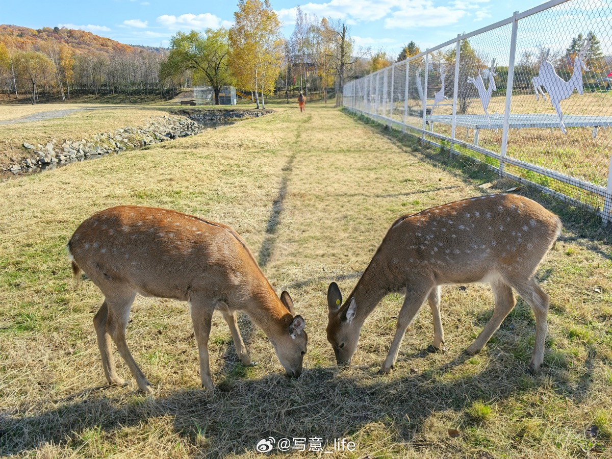
左右滑动查看 2 张游客实拍
结束后约 40 分钟回到伊春市区。
从酒店前往兴安国家森林公园。
用一段轻松森林漫步开启返程日。
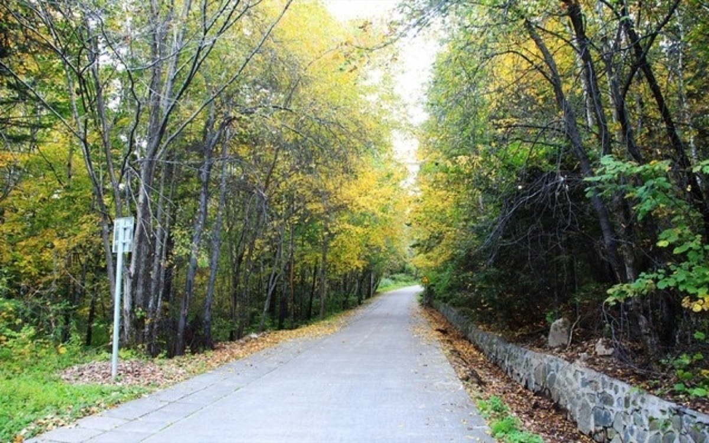
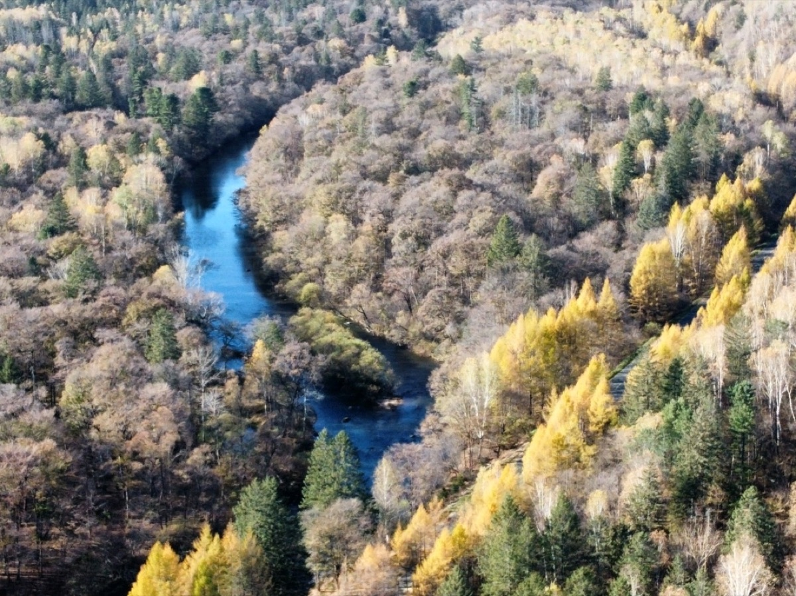
左右滑动查看 2 张游客实拍
停留后前往哈尔滨，预计车程约 3 小时。
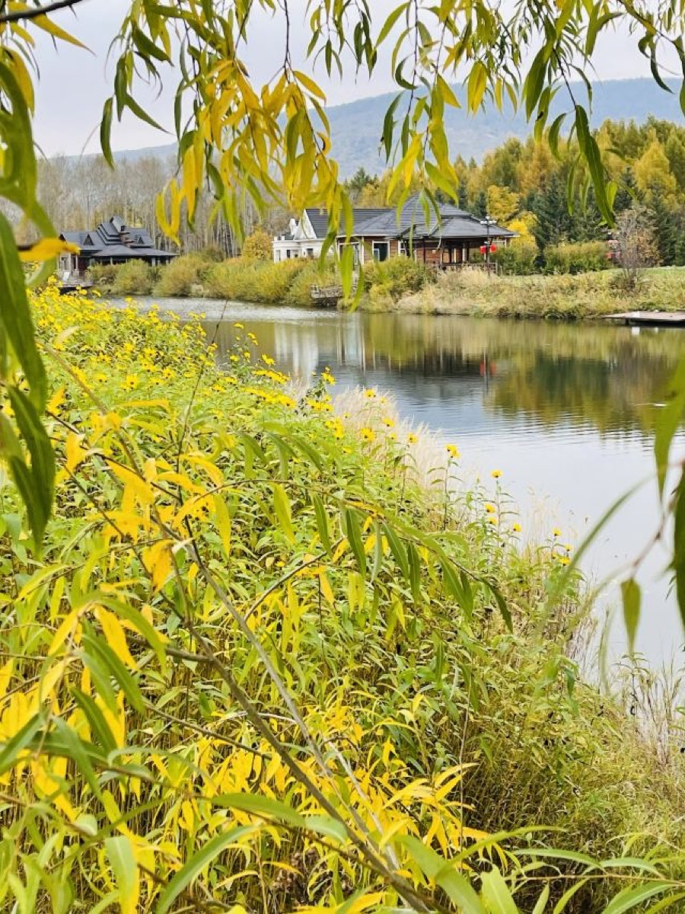
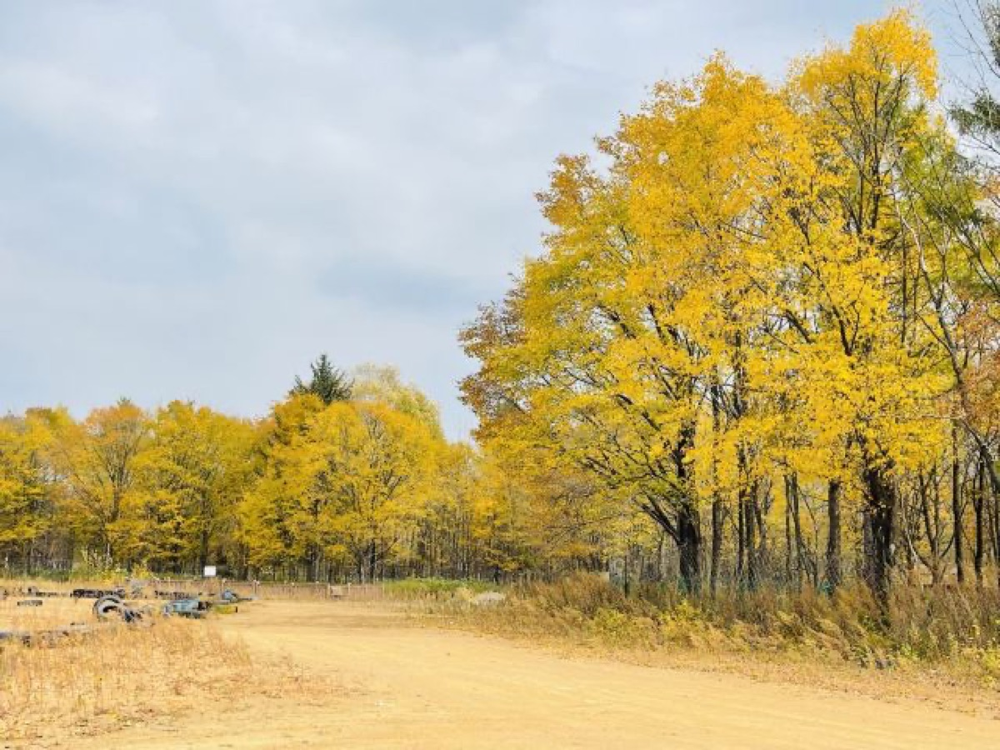
左右滑动查看 2 张游客实拍
晚间可继续前往「极者」小酌。
从酒店乘地铁出发，减少市区停车压力。
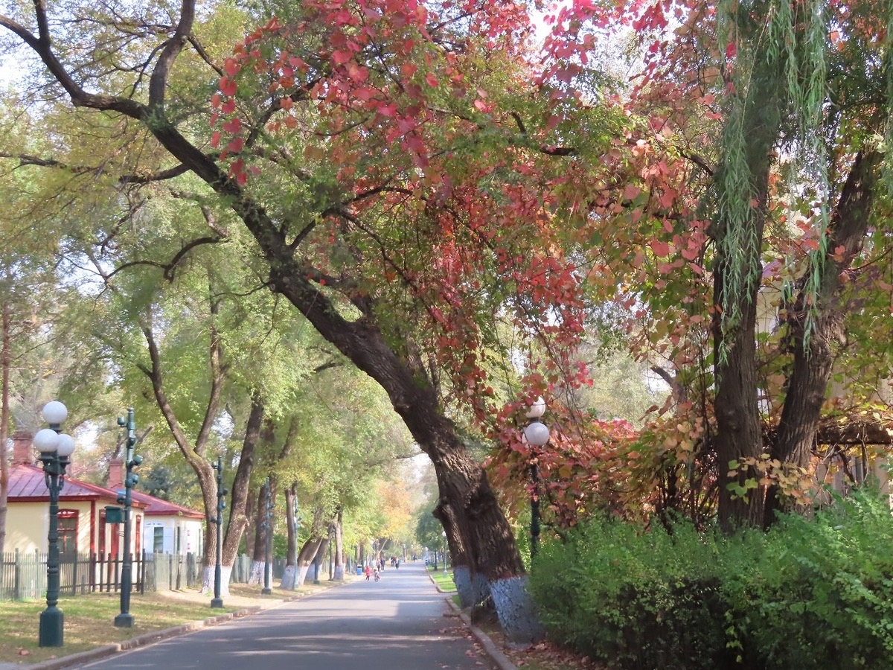
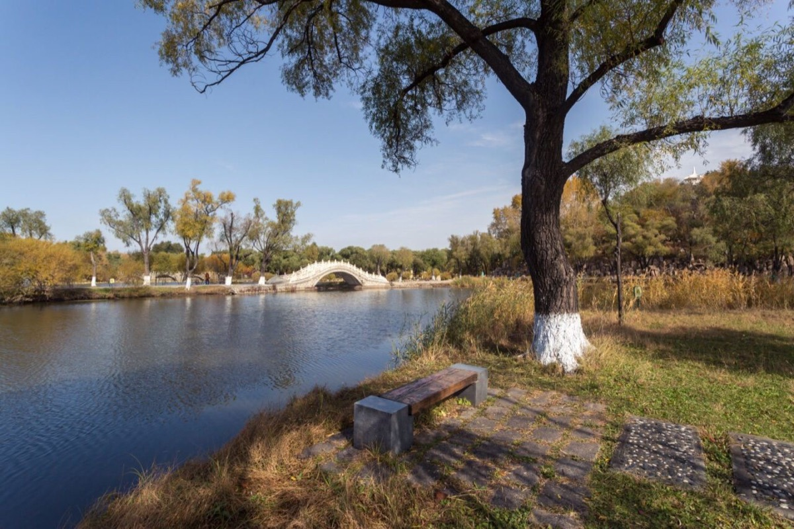
左右滑动查看 2 张游客实拍
待定行程，可根据天气与返程时间取舍。
过江后衔接中东铁路大桥与中央大街步行路线。
完成哈尔滨最后一段城市漫步。